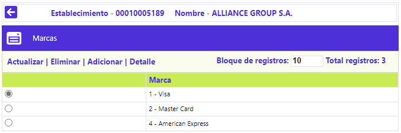
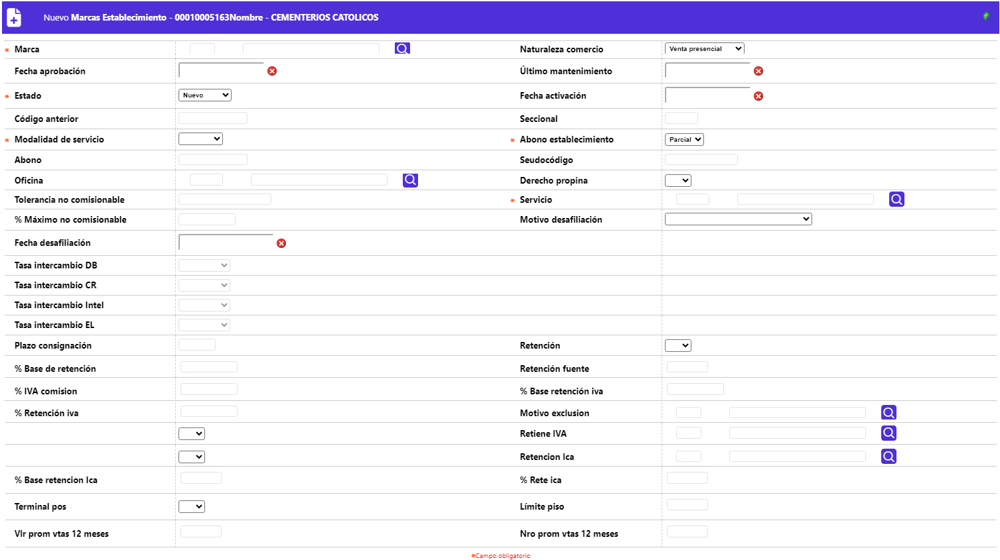
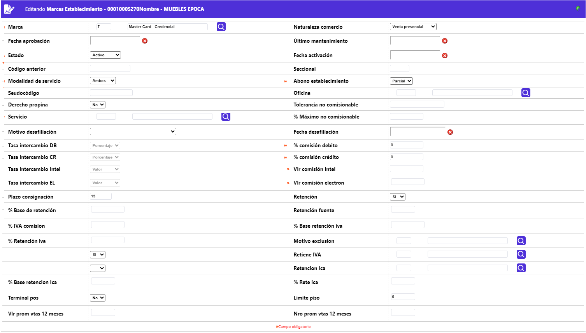
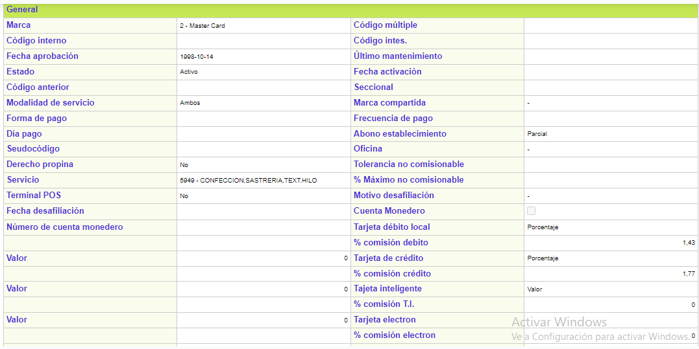

Información de establecimientos - Marcas
Desde este formulario, que se invoca mediante el hipervínculo Marcas contenido en el formulario de Información de establecimientos, se registran las diferentes marcas habilitadas para el establecimiento y para cada una de ellas, parametrizar las condiciones de liquidación de la comisión, vinculación y estado del establecimiento, si es o no, sujeto a efectuarle la retención en la fuente, y de poseer el derecho de cobrar propina, las estipulaciones bajo las que aplican. El formulario contiene los enlaces: Actualizar, Eliminar, Adicionar y Detalle.

Adicionar: Al activar ese enlace se despliega un nuevo formulario con los siguientes campos:

Descripción de campos
Marca |
Campo obligatorio con lista de valores de la cual se selecciona cada una de las diferentes franquicias autorizadas para el establecimiento y para la cual aplican las demás condiciones definidas en este formulario. |
Natúraleza Comercio |
Campo no obligatorio, posee lista de valores tipo combo, del cual se puede seleccionar entre: Venta presencial o Venta no presencial, que realizar el establecimiento. |
Fecha aprobación |
Campo en el que, mediante la funcionalidad de un calendario, se registra la fecha de aprobación de la solicitud de afiliación al operador (franquicia) y asignación del código único. |
Ultimo mantenimiento |
En este campo, en el que, mediante la funcionalidad de un calendario, se registra la fecha en la cual se hizo la última visita realizada al establecimiento, por parte del operador de la franquicia. Aplica en especial para Credibanco - Visa. |
Estado |
Campo obligatorio tipo combo en el que, se debe seleccionar entre: Desafiliado, Inactivo, Activo o Nuevo, la condición en que se encuentre el establecimiento respecto de la marca o franquicia. |
Fecha activación |
En este campo no obligatorio, en el que, mediante la funcionalidad de un calendario, se registra la fecha más reciente de la activación del establecimiento. |
Codigo anterior |
Campo alfanumérico de 11 dígitos, no obligatorio, en el que se registra el anterior código asigando al establecimiento, en caso que lo hubiere, por ejemplo cuando se ha modificado la codificación. |
Seccional |
Este campo alfanumérico de dos dígitos, no obligatorio, se utiliza para facilitar un agrupamiento o sectorización de los comercios de una cadena. |
Modalidad de servicio |
Campo obligatorio tipo combo del cual se debe seleccionar entre: Ventas, Avances o Ambos, el indicador del tipo de servicio autorizado al establecimiento. |
Abono establecimiento |
En este campo obligatorio tipo combo se selecciona entre Total y Parcial para indicar si de las consignaciones realizadas solamente se aplica o abona a la cuenta de depósitos, el valor correspondiente a las transacciones de consumo que han superado exitosamente todas las validaciones (Parcial), o si por el contrario, se le abona el Total de la mismas y en caso de presentarse inconvenientes se realizará el ajuste a la cuenta por el respectivo monto. |
Abono |
Campo no obligatorio, posee lista de valores tipo combo del cual se puede seleccionar entre: Abono detallado o Abono neto, la manera en que se determine, cómo reflejar esos valores de cara al establecimiento. |
Seudocódigo |
Algunos de los procesadores, canalizan las operaciones de adquirencia de los establecimientos a través de un código (asignado por éste) como mecanismo de seguridad. Este campo permite registrar el código perteneciente al establecimiento, el mismo que permite llegar y afectar la cuenta ya sea corriente o de ahorros de cada comercio. |
Oficina |
Campo que contiene lista de valores de la cual se puede seleccionar la sucursal para la cual se desea asociar el código único de establecimiento y de esta manera disponer de información sobre los avances en efectivo gestionados es estas. |
Derecho propina |
En este campo tipo combo se selecciona entre Si o No, el establecimiento de acuerdo con el tipo de servicio prestado está autorizado para el cobro de propina. |
Tolerancia no comisionable |
Campo numérico de 18 dígitos no obligatorio, en el que se registra el valor absoluto máximo acordado entre el emisor y el operador (franquicia) en que puede excederse el monto de comisión cobrado. Si no se define un valor para el establecimiento, el sistema asigna el valor que por defecto presente el tipo de servicio o en su ausencia el valor determinado por la franquicia. |
Servicio |
Campo obligatorio con lista de valores de la cual se selecciona el tipo de servicio correspondiente al nombre del principal servicio o producto ofrecido por el establecimiento. |
% Máximo no comisionable |
Campo numérico de 3 enteros y dos decimales, no obligatorio, en el que se registra el valor porcentual máximo o tope para el cobro de propina, determinado inicialmente por la franquicia; el valor que exceda dicho tope, no será considerado como propina y sumará para aumentar la base sobre la cual se cobra la comisión al establecimiento. Si no se define un valor para el establecimiento, el sistema asigna el valor que por defecto presente el tipo de servicio o en su ausencia el valor determinado por la franquicia. |
Motivo desafiliación |
Este campo tipo combo, permite seleccionar el motivo de desafiliación correspondiente a la razón o causal por la cual un establecimiento es separado o excluido de la marca o franquicia, la que también puede ser voluntaria.p> |
Fecha desafiliación |
Campo en el que, mediante la funcionalidad de un calendario, se registra la fecha en la cual el establecimiento de desafilió de la marca. |
Tasa intercambio DB / CR / Intel / EL |
Campos que poseen lista adjunta de la que se selecciona entre Porcentaje o Valor, de manera excluyente, si el valor relacionado en el campo Valor ubicado a continuación, corresponde a un porcentaje o un valor absoluto, el cual es utilizado por el sistema para liquidar, sobre las transacciones realizadas con cada uno de estos productos (Débito, Crédito, Inteligente o Electron), el descuento o comisión para la entidad, en su calidad de emisora de los plásticos (productos). |
Plazo consignación |
En este campo numérico de tres dígitos no obligatorio, si aplica, se registra el número máximo de días hábiles de que dispone el establecimiento para realizar las consignaciones de los comprobantes manuales o no electrónicos. |
Retención |
Campo que permite marcar, si se debe aplicar al establecimiento el impuesto de retención en la fuente o no, acorde al tipo de sociedad a la cual pertenece. |
% Base retención |
Campo numérico de 7 posiciones enteras y 4 decimales, no obligatorio, en el cual se define el valor porcentual aplicable al monto de los consumos efectuados en el establecimiento, sobre cuyo resultado se liquidará el impuesto de retención de la fuente. |
Retención fuente |
Campo numérico de 7 posiciones enteras y 4 decimales, no obligatorio, en el cual se determina el valor porcentual aplicable sobre la base de retención en la fuente (explicada anteriormente ), para determinar el valor descontado al establecimiento por concepto de impuesto de retención en la fuente. |
% IVA comisión |
Campo numérico de 7 posiciones enteras y 4 decimales, no obligatorio, en el cual se define el valor porcentual aplicable por concepto del impuesto sobre las ventas (IVA), sobre el mayor cobrado, respecto del % comisión máxima permitida. |
% Base retención iva |
Campo numérico de 7 posiciones enteras y 4 decimales, no obligatorio, en el cual se define el valor porcentual aplicable al valor del impuesto sobre las ventas (IVA), sobre cuyo resultado se liquidará el impuesto de retención IVA. |
% Retención iva |
Campo numérico de 7 posiciones enteras y 4 decimales, no obligatorio, en el cual se determina el valor porcentual aplicable sobre la base de retención en la fuente (explicada en el campo anterior), para determinar el valor descontado al establecimiento por concepto de impuesto de retención IVA |
Motivo exclusión |
Campo no obligatorio que contiene una lista de valores poblada a través de la opción Motivos de exoneración retención del presente módulo, de la que se selecciona la razón por la cual se excluye al establecimiento de la aplicación de la retención en la fuente. |
Retiene IVA |
Indicador de si se debe efectuar retención del impuesto de valor agregado (IVA) o no, acorde al tipo de sociedad constituida por el establecimiento. |
Retiene Ica |
Permite realizar consultas por indicador de si se debe efectuar retención del impuesto de industria y comercio (ICA) o no, acorde a la normatividad en particular con la ubicación del establecimiento. |
% Base retención Ica |
Campo numérico de tres enteros y dos posiciones decimales en el que se registra el valor porcentual liquidado sobre el valor de la venta sin tener en cuenta otros conceptos (IVA, propinas, etc), cuyo resultado constituye la base sobre la que se aplica la tasa del impuesto de industria y comercio ICA. |
%Rete Ica |
Campo numérico de tres enteros y dos posiciones decimales en el que se registra la tasa, expresada en milésimas (o/oo), a liquidar sobre la base respecto de la que se aplica la tasa del impuesto de industria y comercio ICA. |
Terminal Pos |
En este campo se indica si el establecimiento posee o no P.O.S. para realizar o tramitar las transacciones. |
Limite Piso |
Campo numérico de 18 dígitos no obligatorio, en el que se determina el valor a partir del cual se requiere solicitar la autorización correspondiente para cualquier utilización. El valor por defecto es cero (0). |
Vlr prom vtas 12 meses |
Campo de salida que muestra el valor o monto promedio de ventas mensual, con relación a los doce últimos meses. |
Nro prom vtas 12 meses |
Campo de salida que muestra el número promedio de ventas mensual, con relación a los doce últimos meses. |
Actualizar: Al activar ese enlace se despliega un formulario en el cual el único campo no modificable es Marca:

Detalle: Al activar ese enlace se despliega un formulario con la información completa del registro y en el cual ninguno de sus campos es modificable:
